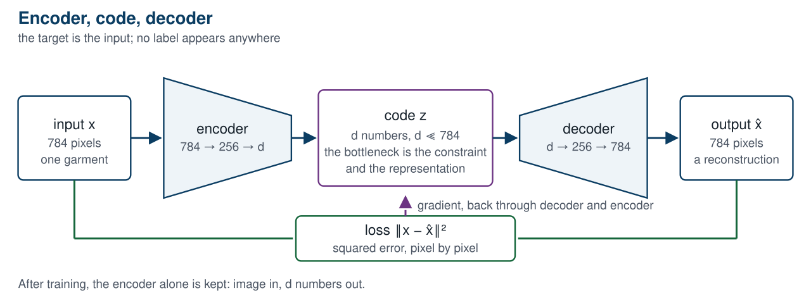
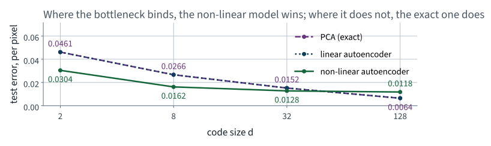
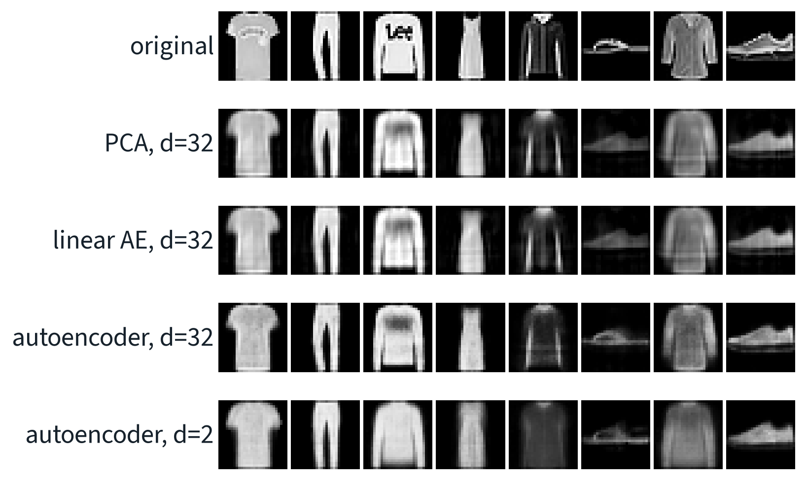
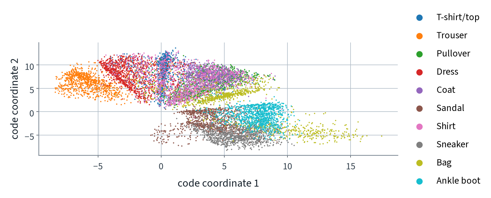
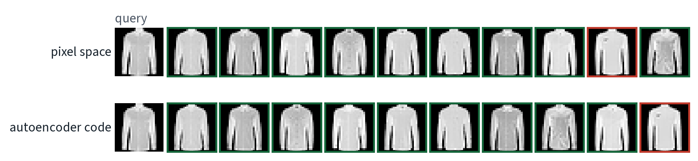
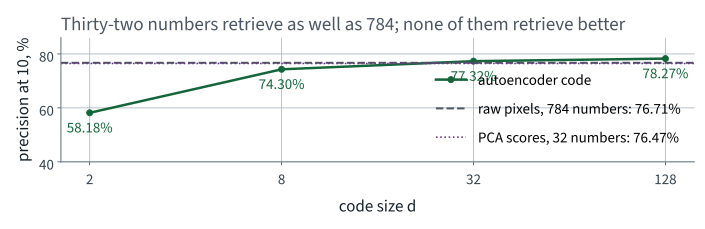
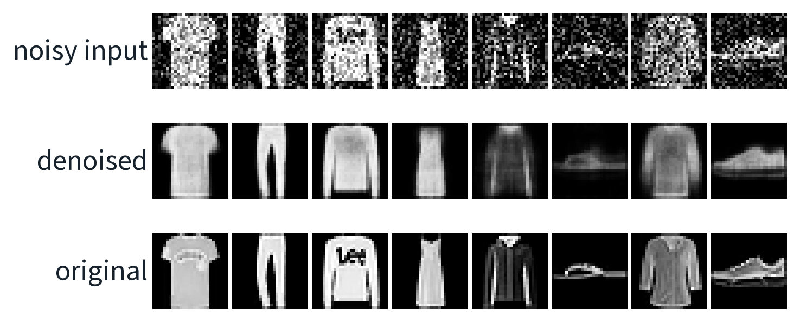

Fashion-MNIST
Lecture 11 Lecture notes
Applications of Machine Learning
BSc Mathematics of Artificial Intelligence · Third year
| Lecture | What it built | What it needed |
|---|---|---|
| 7 | a first network, and what a layer computes | a label for every image |
| 8 | the training loop, written out in five lines | a label for every image |
| 9 | a harmful-content detector, designed end to end | a label for every post |
| 10 | an audit of what a model relies on, and for whom it fails | a label for every row |
| 11 | a network that learns from the images alone | no labels |
A marketplace holds millions of product photographs uploaded by sellers. The category field is free text, often empty, sometimes wrong. Two things the product team wants from the photographs alone:
Every method so far needed a label per row. None of these questions comes with one. The network of today learns from the inputs by trying to reproduce them.
| Fashion-MNIST | Count |
|---|---|
| Images to fit on | 12,000 |
| Validation images | 5,000 |
| Test images, the catalogue | 10,000 |
| Pixels per image | 784 |
| Classes | 10 |
The same split as Lectures 7 and 8, so the numbers compare. Twelve thousand images are few enough to train every network here on a CPU.

The target is the input. The network is trained to return what it was given, through a code too small to hold it — so it has to learn what the images have in common.
The whole design question is what stops the network from learning the identity.
A regulariser — dropout, a penalty on the weights, randomly altered inputs — works by shrinking the set of functions the network can reach, so that fitting the training data no longer means memorising it. An autoencoder needs the same thing, for a sharper reason: with $d = n$ the identity is reachable, the loss is zero, and nothing was learned.
| Constraint | What it forbids | Name |
|---|---|---|
| $d \ll n$ | copying: 784 numbers cannot pass through 32 | undercomplete |
| corrupt the input, keep the target clean | copying: what comes in is not what must go out | denoising |
| penalise the code | using every coordinate for every image | sparse |
Today: the first two.
class AutoEncoder(nn.Module):
def __init__(self, d, hidden=256):
super().__init__()
self.enc = nn.Sequential(nn.Linear(784, hidden), nn.ReLU(),
nn.Linear(hidden, d))
self.dec = nn.Sequential(nn.Linear(d, hidden), nn.ReLU(),
nn.Linear(hidden, 784), nn.Sigmoid())
def forward(self, x):
return self.dec(self.enc(x))
enc and dec are attributes on purpose: the
code is read by calling the encoder alonefor epoch in range(EPOCHS):
net.train()
for xb in batches(X_fit): # no labels in the loader
opt.zero_grad() # 1
out = net(xb) # 2
loss = F.mse_loss(out, xb) # 3 the target is the input
loss.backward() # 4
opt.step() # 5
One change from Lecture 8: the line marked # 3
compares the output with the input, where Lecture 8 compared it
with the labels. Everything else in the loop — the optimiser,
the batches, the evaluation — carries over unchanged, because nothing in it ever depended on the target
being a label.
Twenty epochs of Adam at $10^{-3}$, batches of 128, 12,000 images: a CPU is enough.
| Model, test error per pixel | Error |
|---|---|
| PCA with 32 components — the best any linear compression can do | 0.01519 |
| Linear autoencoder: one linear encoder, one linear decoder | 0.01523 |
| Non-linear autoencoder, 419,120 parameters | 0.01275 |
About a sixth below the best linear compression.
Without ReLUs a network lands where PCA is, to the third digit: a linear network can only find the best flat compression. The sixth is what a curved map buys over a flat one. It is the entire justification for the two ReLU layers.
Training error 0.01188, validation 0.01276: a small gap, so little overfitting, and small because the bottleneck is doing the regulariser’s job.

The linear network tracks the exact projection at every $d$. The non-linear one wins where the bottleneck binds — and at $d = 128$ it loses: 0.01179 against 0.00641.
Animation| $d$ | Projection (exact) | Linear autoencoder | Non-linear autoencoder |
|---|---|---|---|
| 2 | 0.04610 | 0.04611 | 0.03041 |
| 8 | 0.02662 | 0.02665 | 0.01617 |
| 32 | 0.01519 | 0.01523 | 0.01275 |
| 128 | 0.00641 | 0.00649 | 0.01179 |

Rows two and three, PCA and the linear autoencoder, are the same reconstruction. Row five is what two numbers buy.
Squared error on pixels is a distance between two arrays. It has no idea which pixels matter.

Learned without labels; the colour is the label, added afterwards.
Thirty-two numbers per garment, computed from the pixels, learned from the pixels. The product questions become geometry in that space:
| Question | Operation on the codes | Scored by |
|---|---|---|
| similar items | nearest neighbours by Euclidean distance | precision at ten, against the labels |
| groups | $k$-means with $k = 10$ | mean purity of the clusters, against the labels |
Each of them has a baseline that needs no learning: the same operation on the 784 raw pixels, and on the 32 PCA scores. A learned code that cannot beat its own input has learned nothing the question needed.
def precision_at_10(Z): # Z: one row per catalogue image
Zq = Z[q] # 1,000 fixed queries
D2 = (Zq**2).sum(1)[:, None] - 2 * Zq @ Z.T + (Z**2).sum(1)[None, :]
D2[np.arange(len(q)), q] = np.inf # not your own neighbour
nn10 = np.argsort(D2, axis=1)[:, :10]
return (y_test[nn10] == y_test[q][:, None]).mean()

Top: the ten catalogue images closest to the query, comparing all 784 pixels. Bottom: the ten closest, comparing only the 32-number codes. Green: also a shirt; red: another class. Nine of ten in both rows: the code finds what the pixels find, with a 24th of the numbers. The next slide shows the same over 1,000 queries.
| Space | Numbers per item | Precision at 10 |
|---|---|---|
| Raw pixels | 784 | 76.71% |
| PCA scores | 32 | 76.47% |
| Linear autoencoder code | 32 | 77.07% |
| Autoencoder code | 32 | 77.32% |
Four spaces within a point of one another.
The code did not beat the pixels, and it could not have: nothing in the reconstruction loss is about which garments are similar. What it bought is the second column.

Two numbers lose a fifth of the precision; eight recover most of it; thirty-two match the pixels; 128 add a point. The representation question is a cost question from eight upwards.
| Per item | Raw pixels | Code | Factor |
|---|---|---|---|
| Numbers stored | 784 | 32 | 24.5 |
| Multiplications per comparison | 784 | 32 | 24.5 |
| Bytes, as float32 | 3,136 | 128 | 24.5 |
A nearest-neighbour search is a comparison against every item in the catalogue. At equal precision, the factor in the last column is the factor on the index’s memory and on the query’s cost — and for a photograph of real size, 28 × 28 becomes thousands of pixels and the factor grows with it.
The case for a learned representation in a product is, first of all, this table. Quality is the next lecture’s problem.
| Space, $k = 10$ | Numbers per item | Mean purity |
|---|---|---|
| Raw pixels | 784 | 0.6473 |
| PCA scores | 32 | 0.6471 |
| Autoencoder code | 32 | 0.5891 |
Purity: for each cluster, the share of its members that belong to its commonest class, averaged over the ten clusters. Pixels and PCA scores tie; the learned code loses six points — nothing in the reconstruction loss is about which garments belong together, and here it shows.
Same lesson as retrieval. The structure $k$-means finds is the structure the two-dimensional picture drew — footwear, trousers, bags, torso — and it is in the pixels already. The code carries it in 32 numbers, at a price the audit shows.
Give the network a noisy image, and score it on how close its output is to the clean one.
It needs only clean images: the noise is added by us, during training.
for xb in batches(X_fit):
xin = (xb + 0.3 * torch.randn_like(xb)).clamp(0, 1) # noisy input
opt.zero_grad()
loss = F.mse_loss(net(xin), xb) # clean target
loss.backward(); opt.step()
xbSame network, same loop: the plain autoencoder is this loop with line 2 removed.

Top: the input. Middle: the output. Bottom: the clean original, never shown to the network. The garment comes back, smoothed; the noise does not.
| Given a noisy test image | Error vs clean |
|---|---|
| do nothing: the noisy image itself | 0.05264 |
| plain autoencoder | 0.02408 |
| denoising autoencoder | 0.01551 |
The plain autoencoder already removes about half the noise: noise does not fit through 32 numbers. Training on noisy inputs removes most of the rest.
| Given a clean test image | Plain | Denoising |
|---|---|---|
| error | 0.01275 | 0.01781 |
| precision@10 | 77.32% | 75.87% |
The price: on clean images the denoiser is a little worse, at reconstructing and at finding similar items.
Which one? Noisy images in use → the denoising autoencoder. Clean images → the plain one.
| When | What happens | Measured |
|---|---|---|
| The code is as wide as the image | the network can copy its input: zero loss, nothing learned | at $d = 784$ the loss can reach 0 |
| The code is wide, but not that wide | the trained network does worse than PCA | $d = 128$: 0.01179 against 0.00641 |
And for every autoencoder: squared error rewards a blurry average, so a lower loss does not mean better-looking images. Look at the reconstructions.
beyond the syllabus, for context
The autoencoders so far give one code per image and nothing in between: decode a point between two codes and there is no reason the output is a garment. The variational autoencoder makes the encoder output a distribution — a mean and a spread for each number of the code — samples a code from it, and adds a second term to the loss that keeps every such distribution close to a standard normal.
That term is a regulariser on the code — the third row of the bottleneck table — and it fills the code space: a code drawn from a standard normal decodes to something plausible, which makes the decoder a generator.
beyond the syllabus, for context
A sampled code breaks the chain rule of Lecture 8: there is no derivative of a random draw with respect to the parameters that chose its distribution. The repair moves the randomness outside the graph:
Not examined. It is here because every generative model you will meet after this course contains this move.
| Representation | Trained by | What distances in it mean | Lecture |
|---|---|---|---|
| autoencoder code | reconstructing the input | pixel distance, through a curved map, in a basis nobody chose | 11 |
| a classifier’s penultimate layer | labels | whatever separates the classes | 13 |
| a dense-retrieval embedding | query–document pairs | relevance | 20 |
| a contrastive embedding | pairs that belong together | similarity, as the pairs defined it | 23 |
Today’s code matched the pixels on retrieval and could not beat them, because the loss never saw a pair. The rest of the course is, in part, the story of what happens when it does.
NOISE = 0 in the denoising section and run again. The
denoising rows become the plain autoencoder’s, to the digit —
they were always the same model with one line changed.
Design exercise · in the manner of an ML system-design interview
Eight steps follow, each with its pitfall; the model at the centre is today’s code, learned from the photographs alone.
| Pitfall | What happens | What to do |
|---|---|---|
| Studio, not garment | sellers shoot on different backgrounds, at different sizes, on or off a model; a code learned from the pixels learns the studio, and the strip returns the same seller’s other items | crop to the garment, resize, normalise the background before anything is fitted; check the strip for seller clumping |
| Shoppers’ photographs | a camera-search image is personal data, and is nothing like a studio shot | encode on the device or discard after encoding; never keep the photo; train the encoder with camera-style augmentations |
| Duplicates | the same garment listed by four sellers, and in six colours | link variants to one item before splitting, or the split leaks |
Write down what one “item” is before the first fit. Every later number is a number about that unit.
Standardised photographs, variants linked into items → split by item and seller → autoencoder, code sized on validation precision → normalised codes, versioned index → ranking with business rules → A/B test → retrain, re-encode, monitor.
| Pitfall | Address it by |
|---|---|
| Reconstruction error as the product metric | precision on the strip against the category anchor |
| A code that learns the studio | standardised photographs; seller clumping checked |
| Variants across the split | splitting by item and by seller |
| Code sized by the loss | the smallest size that holds validation precision |
| A distance nobody chose | normalised codes, cosine, whitening |
| Look-alikes under a brand | brand and seller rules in the ranking layer |
| Two encoders in one index | versioned encoder and index, atomic re-encoding |
Not presented — for afterwards
five, in the style of the written paper
Solutions on Lecture 12’s deck.
Solutions on Lecture 12’s deck.
The five set at the end of Lecture 10
not part of this lecture
1. A random forest ranks a census sampling weight first by impurity importance, yet shuffling that column on…
It is computed on the training rows, where a fully grown forest fits even noise; and a column with a distinct value per row offers a split almost anywhere, so some split on it always cleans a small node.
2. The partial dependence of a model's probability on age rises from 0.015 at 20 to 0.270 at 50. Say what the…
It averages the ICE curves, one per applicant with age varied and the rest kept. It hides interactions — the married rise from 0.030 to 0.490, everyone else from 0.003 to 0.092 — so the average describes nobody.
3. Define the Shapley value $\phi_i$ of feature $i$ for one prediction, given a value function $v$ over…
$\phi_i = \sum_{S\subseteq N\setminus\{i\}} \frac{|S|!\,(M-|S|-1)!}{M!}\bigl(v(S\cup\{i\})-v(S)\bigr)$, the marginal contribution of $i$ averaged over all $M!$ orders of the features. In one order the contributions telescope to $v(N)-v(\varnothing)$; averaging a constant over the orders leaves it unchanged.
4. A classifier is applied to two groups whose base rates differ, and at its threshold the two groups have the…
Counting the true positives two ways gives $\text{TPR}\cdot p = \text{selected}\cdot\text{PPV}$ in each group. With equal selection rates and equal PPV the right-hand sides are equal, so $\text{TPR}_1 p_1 = \text{TPR}_2 p_2$, and equal TPRs would force $p_1 = p_2$.
5. A bank removes the applicant's sex from its model's inputs and reports that the model is therefore fair.…
The other answers predict sex — on the census data the twelve remaining answers predict it at an AUC of 0.9327 — so the model can use it through proxies; and without the attribute nobody can measure whether outcomes differ by sex. Keep the attribute under separate access for the audit, and measure the criteria per group.
Lecture 12 · Géron Ch. 12
Why a dense layer is the wrong shape for an image
Weight sharing and equivariance, derived
A network that sees Flowers102 at its real size
Run the Lecture 11 notebook first